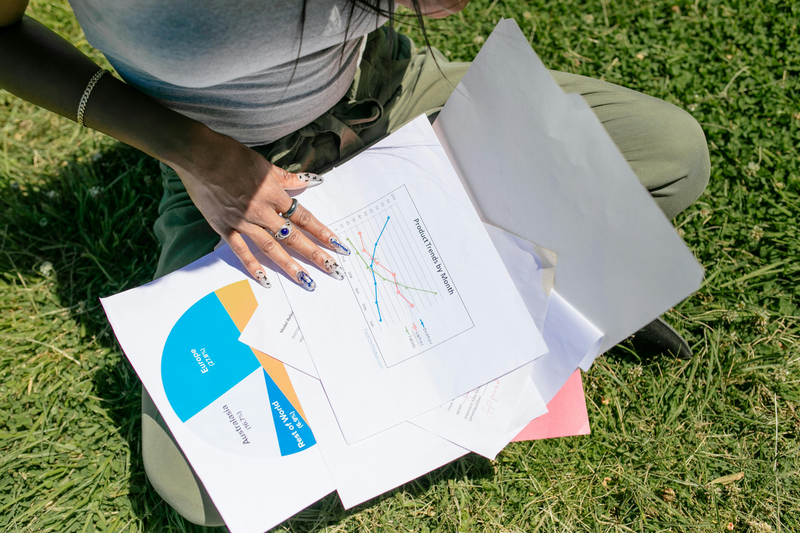

School of Information Projects...
SI 110: Introduction to Information Studies
Green Trips Hypothetical App
{kind=link}
In SI 110, one of our final assignments was to create a hypothetical application aimed towards fixing an issue in our community. My group proposed a ride share app aimed towards addressing safety concerns on campus. We surveyed our fellow classmates and found that many students wished there was a better way to find rides when going off campus as well as having a way to verify that the people they are reaching out to for ride sharing are also students. Our proposed app Green Trips would offer a solution to these issues as it would simplify the process of finding people to carpool with by providing a secure platform to connect with other students. For this assignment I worked on creating app mockups for our proposed app.
SI 206: Data-Oriented Programming
Employment Data Analysis for Civil Rights Case
{kind=link}
In this project, I worked on analyzing historical employment data for the DeGraffenreid v. General Motors lawsuit from 1976. The primary focus was to validate claims of discrimination against Black women using data analysis techniques applied to Comma-Separated Values (CSV) files and nested dictionaries.
General Motors’ (GM) layoff policy during the 1970s recession is the core subject of this analysis. The company used a seniority-based layoff policy ("last hired, first fired"), which disproportionately impacted Black women due to previous discriminatory hiring practices. This project involved coding and implementing various functions to load, categorize, and analyze the data, ultimately revealing critical insights into the intersection of race and gender within GM’s workforce.
Through this project, I demonstrated the application of data science techniques to uncover actionable insights related to employment discrimination. The analysis confirmed that GM’s seniority-based layoff policy disproportionately affected Black women due to historic hiring disparities. This project not only showcased my technical skills but also emphasized the importance of considering socio-economic factors and intersectionality in data analysis.
Web Scraping Airbnb Data for Compliance and Accountability
{kind=link}
In this project, I employed web scraping techniques to gather and analyze data from Airbnb's website. Leveraging the BeautifulSoup library in Python, I extracted important data from static HTML files provided from Airbnb's public listings in the Mission District of San Francisco. The project's core aim was to investigate whether Airbnb hosts were complying with San Francisco's local laws requiring business licenses for short-term rentals.
Reflecting the broader social context, this analysis is crucial as it pertains to accountability in the face of potential exacerbation of the housing crisis caused by short-term rental platforms like Airbnb. By ensuring that listings comply with local regulations, the project aims to support the corrective systems that manage San Francisco's housing market.
SI 307: Introduction to User Experience Design
Recreating Venmo

Throughout SI 307, using core skills for Figma like autolayouts, styles, components, responsive layouts and animations I was able to successfully recreate Venmo's landing page for both mobile and desktop.
MI-Maizey Re-design
{kind=link}
In partnership with the University of Michigan ITS Services, I was able to apply core UX principles while re-designing one of the universities AI tools. I chose to re-design its newest tool MI-Maizey, my redesign of Mi-Maizey aims to address critical issues in user onboarding, engagement, and data transparency to better meet the needs of University of Michigan students. The ultimate goal is to make Mi-Maizey more user-friendly and engaging, thereby increasing its adoption among students and faculty.
SI 339: Web Design, Development, and Accessibility
Client Project: Cross-country Website
{kind=link}
For this semester-long project, I was able to utilize HTML, CSS, and Javascript in order to improve a local Ann Arbor high school's cross country team website. The goal was to create a website that is fully accessible. Additionally, I chose to follow an athlete-centered approach so that athletes are able to easily track their year-by-year progress.